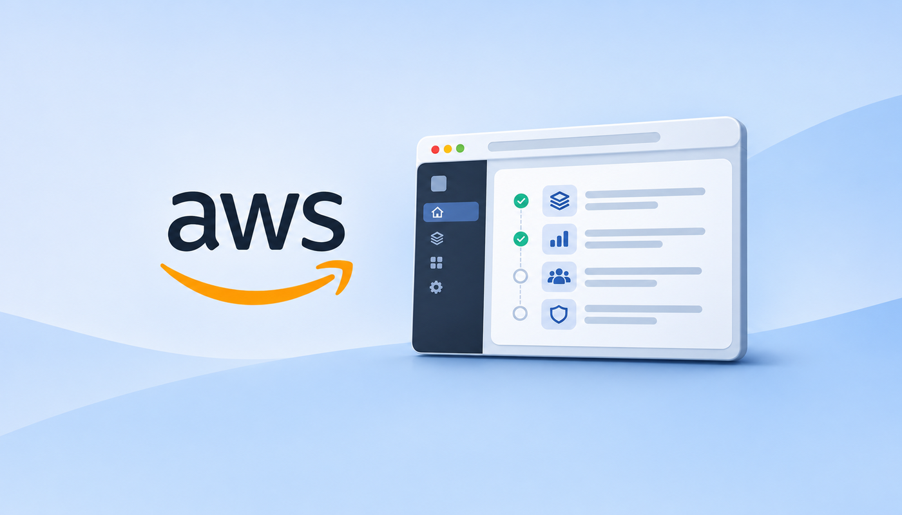

Amazon Web Services · UXR internship
Improving onboarding and adoption at AWS
How can an internal enterprise tool help people get started with confidence and give them a reason to return?

At a glance
- Led two studies on how people got started and what shaped continued use.
- Turned onboarding findings into prototypes and partnered with Engineering to bring improvements into the product.
- Used a survey and follow-up interviews to help the team prioritize adoption work.
The research challenge
The team was building an internal tool and needed to make two decisions. Where should it improve the first-use experience? And what would make the tool useful enough for people to come back? I studied those questions in sequence because a usability session could show where people got stuck during setup, while understanding continued use required talking to users after they had tried the tool in their own work.
Study 1: Getting started
In moderated think-aloud sessions, I watched people set up the tool and try representative tasks. I paid attention to moments of hesitation, the questions people asked, and what they expected to happen next.
People could complete setup with a moderator, yet still felt uncertain about the choices they had made. That distinction shaped my recommendations. I focused on where the experience needed to explain what a choice meant, when to give that guidance, and how to help people take the next step.
Finding 1: Completing Setup Didn’t Mean People Felt Ready
I compared what participants did with what they expected to happen. Watching both made it possible to see uncertainty that a completion metric alone would miss.
-
Connect sources
- What happens
- Users choose which work sources to connect, one at a time.
- Where users hesitated
- Who can see what I add? Should I connect restricted content? Can I finish later?
- Effort
- Adding several sources takes time.
-
Generate starter content
- What happens
- AI uses the connected sources to create initial content for the workspace.
-
Enable meeting summaries
- What happens
- Users set up a feature that can transcribe and summarize meetings.
- Where users hesitated
- How does transcription work, and how does it become a summary?
-
Start using the app
- What happens
- Users enter the workspace and encounter unfamiliar terms with little explanation.
- Where users hesitated
- What do these terms mean, and what should I do first?
What this changed: I separated problems that could block setup from problems that made it harder to use the tool afterward. That helped the team decide where to clarify a choice in the moment and where to offer guidance after setup.
Study 2: What brought people back
I used a survey to identify patterns in perceived value and followed up with interviews with people who kept using the tool and people who had stopped. Comparing those groups helped me distinguish early interest from the practical reasons someone would make the tool part of their routine.
Continued use depended partly on how well the tool fit into existing workflows and how much extra effort it took to get value from it. I translated those findings into recommendations the team could weigh against onboarding fixes and other product priorities.
Finding 2: Continued Use Depended on Fit With Existing Work
The survey helped me see which goals users had and where they felt the tool made their work easier. In interviews, I asked people to walk through a recent use, what prompted it, and what they used when they didn’t reach for the tool. I coded the interviews against the same themes and compared people who stayed with the tool with those who drifted away.
-
Single-workflow team
The tool earns a place in one recurring task.
Design implication Make that task easy to repeat.
-
Champion-led team
One person does much of the work to keep the team using the tool.
Design implication Reduce manual upkeep so the tool stays manageable even when one person does all the work to keep it running.
-
Product goal
Workflow-embedded team
The tool becomes part of the team’s regular work.
Design implication Make the tool easy to use within existing routines so teams can get value without creating extra work.
-
Solo adopter
An individual tries the tool while broader team use remains limited.
Design implication Make the first useful outcome clear for one person.
The comparison helped me recommend two priorities: reduce the effort needed to get recurring value and support users within their existing workflows.
From findings to product decisions
I paired onboarding recommendations with prototypes so Product, Design, and Engineering could review where guidance would appear and what it would say.
Onboarding
- Evidence
- People completed setup with questions about their choices and next steps.
- My contribution
- Prototyped recommendations, wrote tour copy, and proposed answers to recurring setup questions.
- Shipped
- Engineering built the guided tour, and the team adapted my proposal into a linked help resource.
Adoption
- Evidence
- Continued use was easier when the tool fit an existing routine.
- My contribution
- Synthesized survey and interview findings into recommendations for reducing recurring effort.
- Informed priorities
- Product and Engineering used the evidence to prioritize follow-up work.
Outcome
The next question I would test is whether the updated onboarding helps people complete a meaningful task on their own and whether they return for that task later. That would connect the changes we shipped to the behavior the team ultimately wanted to support.